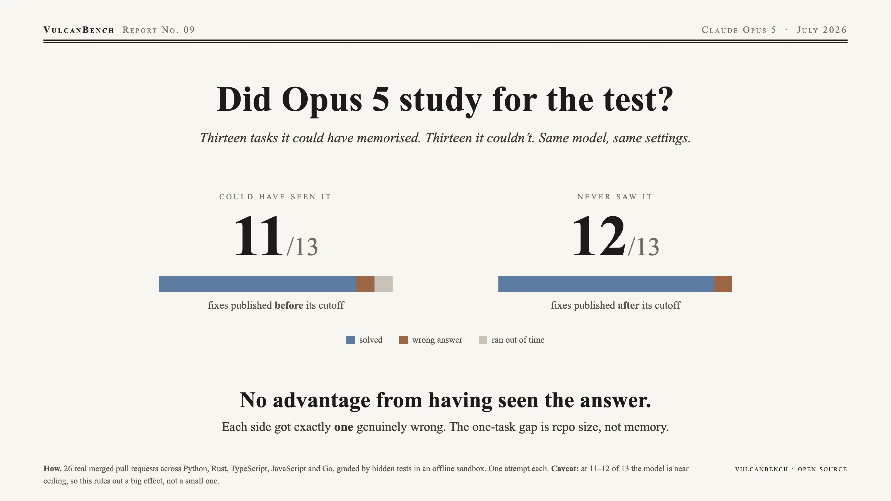

No detectable contamination effect: the arm Opus 5 could have memorised scores 11/13; the arm it cannot have seen scores 12/13 — one genuine wrong answer each. The visible one-task gap is repo-scale composition, not memory. At 11–12 of 13 the model is near ceiling, so this rules out a large effect, not a small one — and getting to the null took four harness fixes that had been masquerading as signal.

| Arm | Score | pass@1 | Genuine misses | Hit wall-clock | Cost | Tokens/task | Time/task | $/solved |
|---|---|---|---|---|---|---|---|---|
| Clean (post-cutoff) | 12/13 | 92.3% | 1 | 0 | $4.58 | 38 K | 4.7 min | $0.38 |
| Contaminated (pre-cutoff) | 11/13 | 84.6% | 1 | 1 | $16.36 | 121 K | 9.4 min | $1.49 |
Claude Opus 5, medium effort, one attempt per task. Genuine misses completed and produced a wrong patch; hit wall-clock = still working productively when the budget expired — a different failure mode, not a statement about capability.
No detectable contamination effect. Genuine capability misses are 1 versus 1. The headline gap is a single task (7.7 pp), inside the noise floor at n=13. Memorisation of the upstream fix did not measurably help.
The visible gap is repo-scale composition, not memorisation. The contaminated arm carries 11/13 large-or-xlarge repositories against the clean arm’s 8/13 — which is why the same 13-task shape cost 3.6× more and ran 2× longer per task, and why the one wall-clock loss landed there. Cross-suite comparisons must report scale mix alongside score.
Evidence against a large effect, not proof of none. At 11–12 of 13 the model is near ceiling, and a ceiling leaves memorisation little room to show itself. A sharper test needs harder tasks or a weaker model, not more tasks at this difficulty.
Most of the apparent signal was harness bugs. Before fixing them, the same comparison read 7/13 vs 12/13 — a large gap pointing the wrong way for contamination, produced by stalled HTTP requests scored as failures. Each of four fixes moved the arms closer together; the sequence ran 7/13 → 10/13 → 11/13 against an unchanging 12/13.
| Defect | Effect on scores |
|---|---|
| Run budget passed as the per-request socket timeout, disabling retries | One stalled request consumed a whole task and scored it 0; six of 13 first-run tasks died this way |
| Request ceiling set from a pooled latency distribution | 300 s sat below a response that legitimately completed in 333 s; now 600 s |
| Infrastructure errors dropped the task instead of retrying | A tidy pass@1 over a silently smaller denominator, a different task each run |
| large and xlarge repos shared an 1800 s budget | Neither tier could spend its step allowance; now 2700 s / 3600 s |
These changed scoring behaviour. Results published before them — including Reports 04 and 08 — were produced under the old semantics and are not directly comparable to this report.
Both arms graded by deterministic hidden tests in a network-isolated Docker sandbox; every task pre-validated gold = 1.0, unpatched = 0.0. The arms are committed suite manifests (pre-2026-05 in tasks/v3, new_in_v4 in tasks/v4), and every task records its upstream merge date, so the clean/contaminated split can be recomputed against any future model’s cutoff — v4 is clean for a May 2026 cutoff specifically, not indefinitely. Caveats: n=13 per arm (one task is 7.7 pp), single attempts, one model; wall-clock inflated ~2× by amd64 emulation on an arm64 host (scores unaffected).
{kind=link}